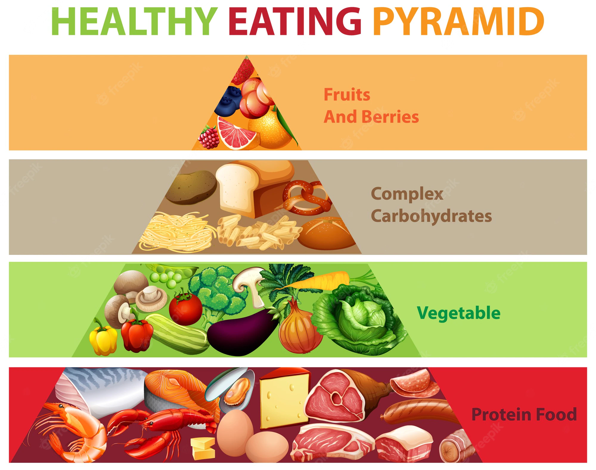
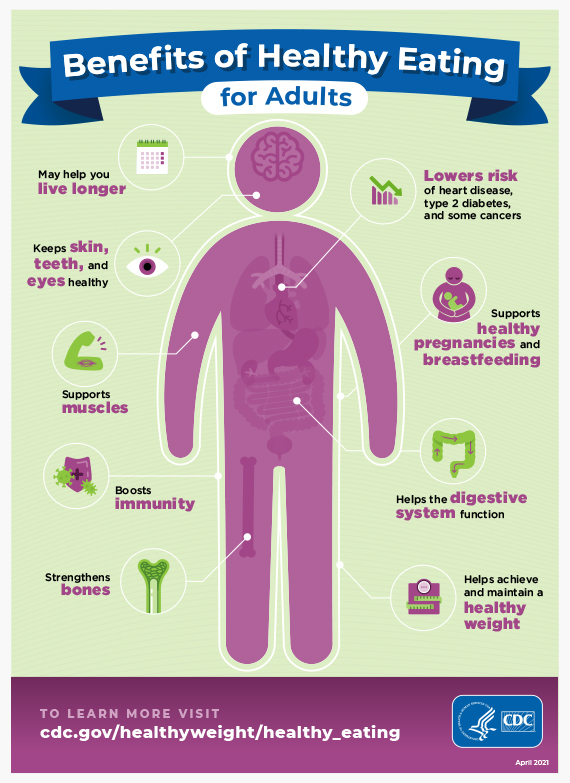
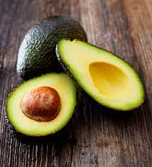

Healthy food is essential to our lives. It gives us energy to do our favorite things throughout the whole day. What foods are healthy, do you ask? Well, that's what our next paragraph is about.
Our bodies are AMAZING! We need to eat healthy things so our body can perform important functions. some of the healthy things we can eat include dairy, grain, meat, fruits and veggies, and nuts. In order to be happy, we must eat right, so we can still do the things that we like to do.
Some of the things that we can do because of eating right are: running, swimming, lifting weights, and even sports! Imagine how boring our lives would be if we couldn't do these things! I'm not saying that we can't eat donuts and things like that, but we shouldn't eat those things all the time.
Let's use avoccado as an example. Avocado is high in protein for a fruit, and it is good for your heart. Avocados are a source of vitamins C, E, K, and B6, as well as riboflavin, niacin, folate, pantothenic acid, magnesium, and potassium. Avocados contain high levels of healthy, beneficial fats, which can help a person feel more full between meals.
Salmon -- that tender, reddish, firm fish -- is one of the most popular fish choices in America thanks in part to its rich, buttery flavor. The vitamin B12 in salmon keeps blood and nerve cells humming and helps you make DNA. But for your health, the true beauty of salmon is its wealth of omega-3 fatty acids. Most omega-3s are "essential" fatty acids. Your body can't make them, but they play critical roles in your body. They can lower the chance that you'll have: Cardiovascular disease (including heart attack and stroke). Some types of cancer. Dementia. Alzheimer's and other cognitive diseases. They can also ease the effects of rheumatoid arthritis. And that's a good thing for your health.